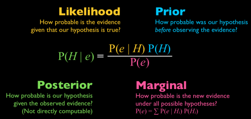

Math and Programming Camp Day 2
2026-08-19
Democracies are more likely to grow faster — or not
India will probably remain democratic — or not
This poll is accurate to within three points — probably
We think the effect is positive; the evidence is thin
Likely, chance, prone, probably, thin. The same vocabulary in journals, in newspapers, and at dinner.
we acknowledge how humble our knowledge of an uncertain world is
yet audaciously analyse that uncertainty, and engage it critically
communicate it in a language held in common
and say, with a stated degree of confidence, what to expect
Not certainty. But uncertainty, made precise enough to argue with.
Outcomes, events, sets, and the sample space they all live in.
D=1{Democracy} does to our 174 countries.| Notation | Meaning |
|---|---|
| \(x \in A\) | x is an element of A |
| \(x \notin A\) | x is not an element of A |
| \(A \subseteq B\) | every element of A is also in B |
| \(\emptyset\) | the empty set — no elements |
| \(\Omega\) (or S) | the sample space — all possible outcomes |
| \(\lvert A \rvert\) | cardinality — the number of elements in A |
| \(A \cap B = \emptyset\) | A and B are mutually exclusive |
| Notation | Meaning |
|---|---|
| \(A \cup B\) | union — in A, or B, or both |
| \(A \cap B\) | intersection — in both A and B |
| \(A^c\) (or \(A'\)) | complement — in Ω but not A |
| \(A \setminus B\) | difference — in A but not B |
| \(\displaystyle\bigcup_{i=1}^n A_i\) | union of n sets: \(A_1\cup\cdots\cup A_n\) |
| \(\displaystyle\bigcap_{i=1}^n A_i\) | intersection of n sets: \(A_1\cap\cdots\cap A_n\) |
The three rules any probability function must obey — and everything else, derived from them.
Empty set
Bounded
Complement rule
Monotonicity
Addition rule
Boole’s inequality (stated)
Joint and conditional probability, independence, and flipping a conditional around.
Prior, P(Aj): our belief about which cause is true before we observe anything — just the base rate.
Posterior, P(Aj | B): our updated belief once we see the evidence B — the whole point of running Bayes' rule.
Bayes' rule is, in this sense, an updating rule: it takes a prior and a piece of evidence, and returns a posterior.

Combinatorics: shortcuts for counting outcomes without listing every one.
Pr(e) was a ratio of counts — but counting outcomes by hand stops working once the sample space gets big.From events to numbers — and the algebra of what to expect.
[TBD]
[TBD]
[TBD]
[TBD]
[TBD]
[TBD]
[TBD]
Programming lecture: Webpage Chapter
Back to: Math Camp 2026 website
Math and Programming Camp, Dept. of Government, Georgetown University